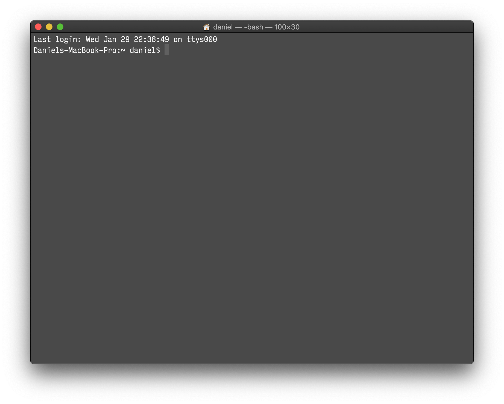
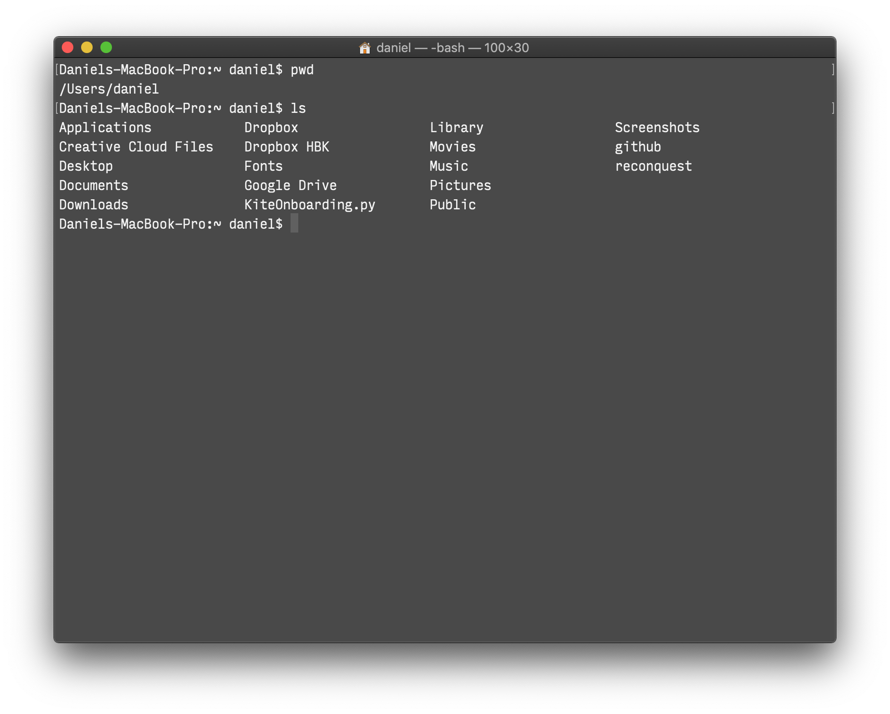
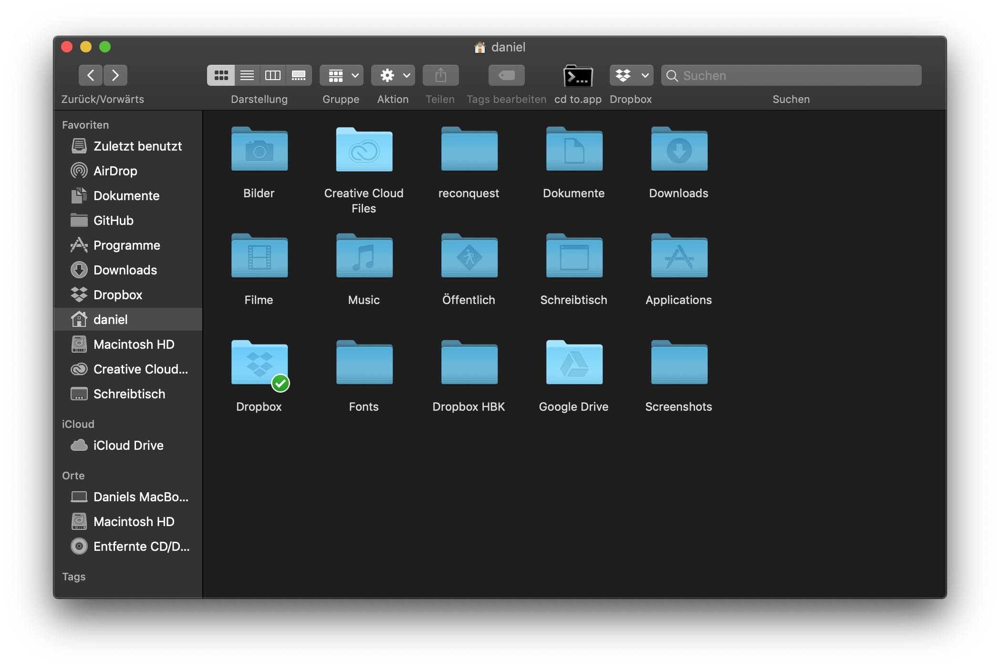
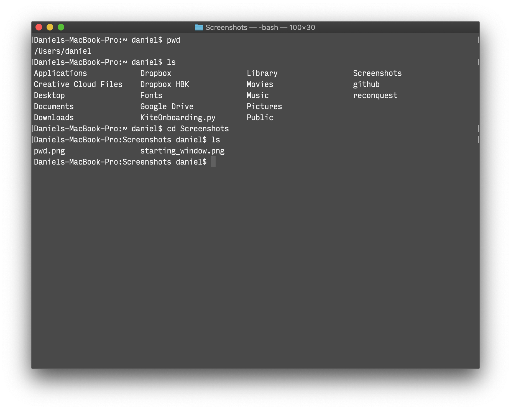
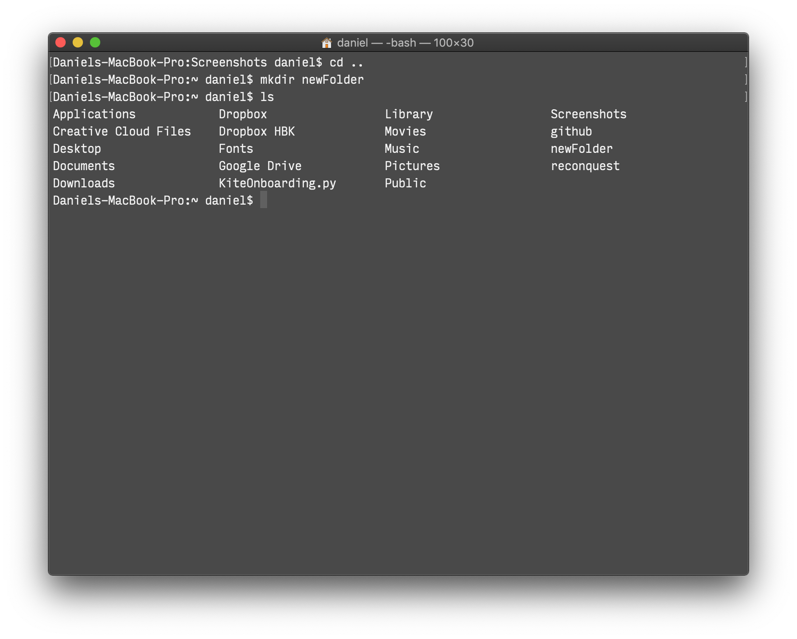
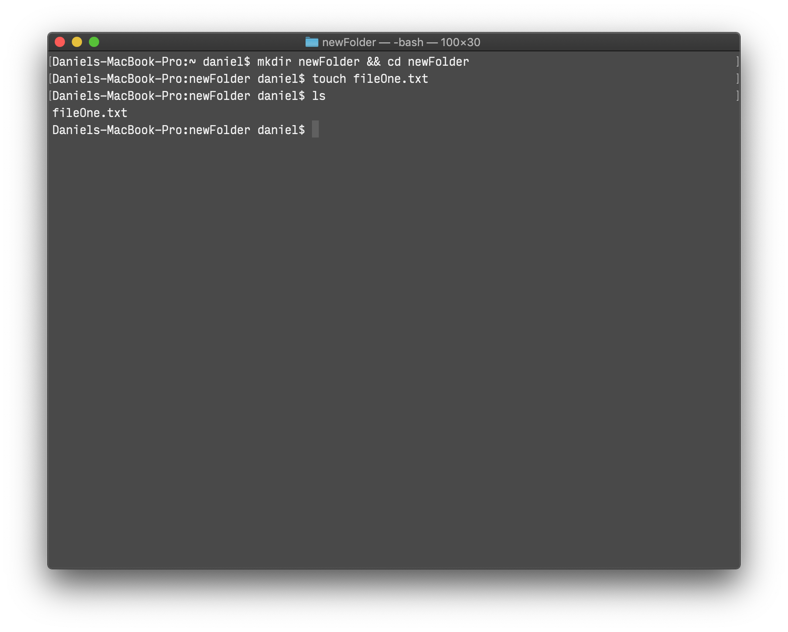
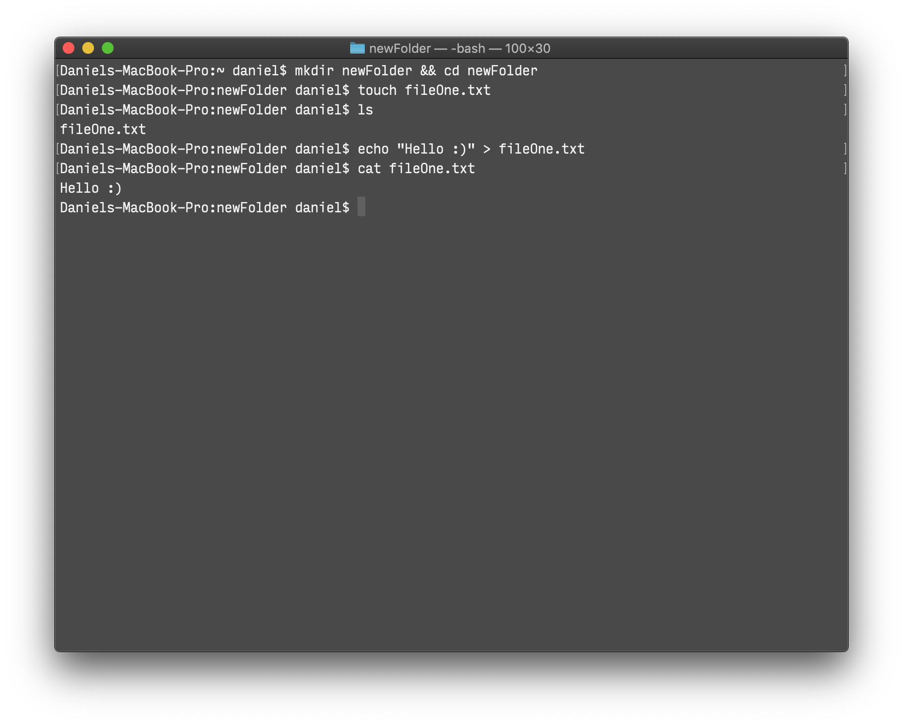
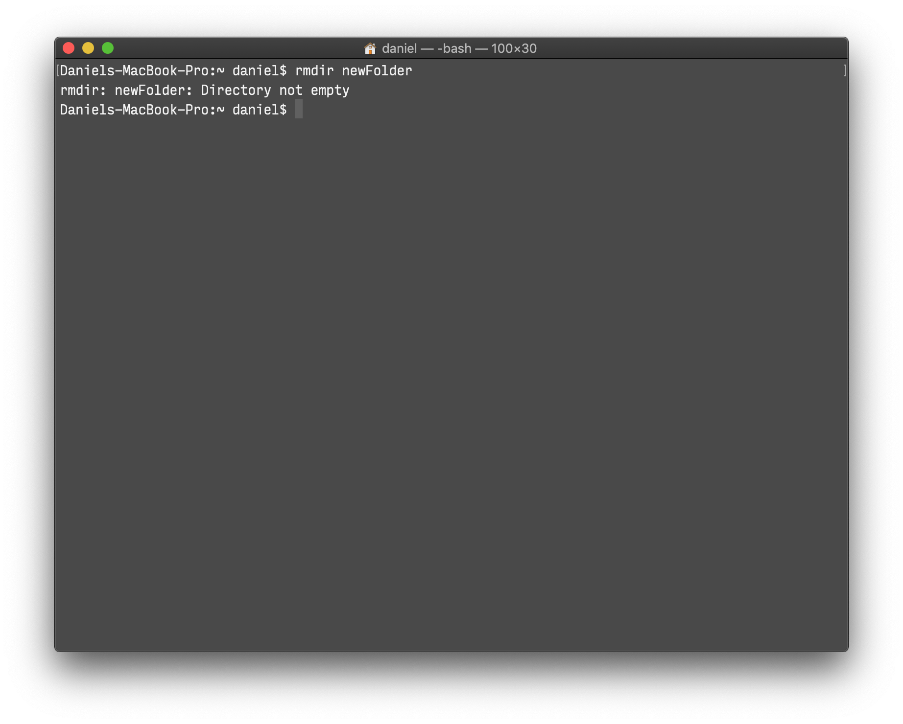
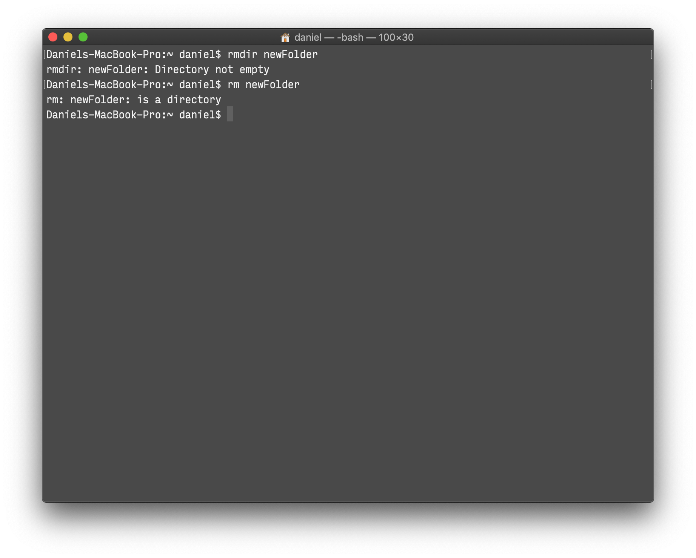

Terminal
The Terminal is basically your computer without the graphical user interface. You can access everything on your computer with it, but instead of clicking with your mouse you do it with written commands. Similar applications also exist on other operating systems. These are commonly referred to as command-line tools or shells.
Starting the app
If we open up the Terminal – either by using the Terminal.app in Programs → Utilities, or by opening the Spotlight search (command + space) and typing in Terminal – you’ll see a window similar to this:

It shows you the name of the computer, the current folder you are in and your username.
Yours will look a bit different, but you’ll also have the ~ and the $ symbols.
What we see is:
Daniels-MacBook-Pro:~ daniel$
My computer name is: Daniels-MacBook-Pro
The directory is: ~
My username is: daniel
The Directory is the current folder you are in, the ~ means that it is your home folder
The $ sign signifies that the Terminal is ready to accept your command (in the future if you see commands somewhere that start with the $ you don’t have to type it. As long as the Terminal is ready, it’ll be there).
Using the Terminal
Moving between directories
A very useful command is pwd. It stands for Print Working Directory and it will show you exactly where you are. Just type in pwd after the $ sign and press enter.

You can see it prints out /Users/daniel
This is the directory we are currently in and all the commands we execute will be executed in this directory.
Now you know where you are, but you also want to know what’s there so you can interact with those files and directories. For that we use the command ls which stands for List Directory Contents.
Again we just type in the command after the $ sign and press enter.

Now you see the exact same things you also see in the Finder.

So right now we are in the home folder, and we know what files and directories there are. Now let’s go to another directory. To do that we use the cd command, it stands for Change Directory.
Say I want to do something in the folder where all the screenshots for this article are, I use the cd command like that:
cd Screenshots
As you can see the ~ sign (which describes our home folder) has changed to Screenshots. We changed the directory from Home to Screenshots and now we can interact with the files in this folder. For example we can look what is inside this folder with the ls command

If you want to move into a directory that has a space in it’s name you would either have to wrap the name in double quotes or escape each space with a backslash.
So if the folder from our previous example was called Screen Shots instead of Screenshots we would have used either
cd "Screen Shots" or cd Screen\ Shots
When you moved to a directory, are done with your work there and want to go back to the previous directory, you can do so by using cd ..
The .. stands for the parent directory of the one you are currently in.
After a while the Terminal window gets quite busy. With the clear command we can clear the window from all the things we did before.
Interacting with files and directories
Creating directories
To create a new directory we use the mkdir command (Make Directory)
mkdir newFolder

And to remove the directory again we use rmdir (Remove Directory)
rmdir newFolder

Creating files
Now let’s create a file in our new directory. First we change the directory to our new folder with cd newFolder and then we create a text file with the command touch.
touch fileOne.txt

This is now a completely empty texfile. To write text to a file you can use the echo command
echo "Hello :)" > fileOne.txt
To read the contents of the file we use the command cat
cat fileOne.txt

Deleting files and directories
To remove files we can use the rm (Remove) command
rm fileOne.txt
Note that this will delete the file permanently. It won’t be sent to the Trash and there is no way to recover the file.
We already know how to delete a directory with the rmdir command. However this only works if the directory is empty. If the directory is not empty we get an error.

And the rm command alone won’t work on a directory either.

Instead if you want to delete a directory that contains files you need to use rm -r newFolder
Again: this deletes the directory and all the files in it permanently
Running multiple commands
To run multiple commands in one line you can use the && operator. As long as the first command was successful the second one will also run.
mkdir newFolder && cd newFolder for example creates a new directory and changes the directory in one command so you can immediately start working in your new directory.
Creating virtual environments
Virtual environments come in handy if you need to work with the Terminal and certain packages you don’t want to install globally on your computer. Usually if you need to install an additional package (with the package you basically install a little program) to do things with the Terminal, it will be installed globally. But sometimes you need to work with two different versions of the same program and therefore it’s better to have them installed in isolated environments.
Or let’s say you have a collection of programs you always use, in order to keep everything together you could create a virtual environment and call it FontEngineering for example. That way you have all the important programs right in one place without interfering with the global packages.
Start by creating a new directory to work with
mkdir virtualEnvironment && cd virtualEnvironment
Now we create a virtual environment inside the directory
python3 -m venv fontEngineering
venv is the name of the command that creates the virtual environment. fontEngineering in this case is the name of our virtual environment. In the bin folder you have the files that interact with the virtual environment. And in the lib folder you have a copy of the python installation you used to create the virtual environment along with the site-packages folder (if you install packages in your virtual environment this is the place you can find them). In order to activate the environment use the following command
source fontEngineering/bin/activate
Notice how the prompt is now prefixed with the name of the environment. That means it is active and the python executable will only use the environments packages. To deactivate the environment again we can simply type
deactivate
Basic commands
Some useful basic commands
╔══════════╦═════════════════════════╦════════════════════════════════════════════════════════════╗ ║ Command ║ Meaning ║ Description ║ ╠══════════╬═════════════════════════╬════════════════════════════════════════════════════════════╣ ║ pwd ║ Print working directory ║ Find out where you are ║ ╠══════════╬═════════════════════════╬════════════════════════════════════════════════════════════╣ ║ ls ║ list directory contents ║ See what files and directories are in the current location ║ ╠══════════╬═════════════════════════╬════════════════════════════════════════════════════════════╣ ║ cd ║ change directory ║ Change the current directory ║ ╠══════════╬═════════════════════════╬════════════════════════════════════════════════════════════╣ ║ clear ║ clear ║ Clear the Terminal window ║ ╠══════════╬═════════════════════════╬════════════════════════════════════════════════════════════╣ ║ mkdir ║ make directory ║ Create a new directoy ║ ╠══════════╬═════════════════════════╬════════════════════════════════════════════════════════════╣ ║ rmdir ║ remove directory ║ Remove directory ║ ╠══════════╬═════════════════════════╬════════════════════════════════════════════════════════════╣ ║ rm ║ remove ║ Remove files ║ ╠══════════╬═════════════════════════╬════════════════════════════════════════════════════════════╣ ║ touch ║ touch ║ Create a new file ║ ╠══════════╬═════════════════════════╬════════════════════════════════════════════════════════════╣ ║ echo "x" ║ echo ║ Write text to a file ║ ╠══════════╬═════════════════════════╬════════════════════════════════════════════════════════════╣ ║ cat ║ concatenate ║ View contents of a file ║ ╠══════════╬═════════════════════════╬════════════════════════════════════════════════════════════╣ ║ && ║ and ║ Run multiple commands ║ ╚══════════╩═════════════════════════╩════════════════════════════════════════════════════════════╝
Let’s say you want to change the directory but don’t want to type in the path you can use drag and drop with the Terminal.
To do that you simply type in the cd command and drag the directory from the finder into the Terminal window.